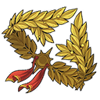
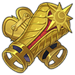
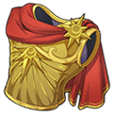
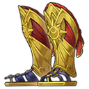

추천 광추
시간을 황금으로 엮어
기초 속도·공격을 통한 치명타 피해·일반 공격 피해
효과 자세히
기초 속도 +12. 본체·정령 공격마다 두 유닛의 치명타 피해 +9%(최대 6스택). 최대 중첩 → 일반 공격 피해 +54%.
땀은 많이, 눈물은 적게
치명타 확률과 기억 정령 피해
효과 자세히
치명타 확률이 20% 증가하며, 기억 정령이 필드에 있을 시 장착한 캐릭터와 기억 정령이 가하는 피해가 36% 증가
추억 회상
기억 정령 턴에 따라 피해 증가
효과 자세히
기억 정령의 턴 시작 시 장착한 캐릭터와 기억 정령이 각각 회고를 1스택 획득하며, 스택마다 가하는 피해가 12% 증가, 최대 중첩수: 4스택. 기억 정령이 사라질 시 장착한 캐릭터와 기억 정령의 회고가 해제된다
천재들의 안부 인사
공격력 및 필살기 후 일반 공격 피해
효과 자세히
공격력이 32% 증가하며, 필살기 발동 후 장착한 캐릭터와 기억 정령이 가하는 일반 공격 피해가 40% 증가, 지속 3턴
추천 유물
개선가를 울리는 영웅 4 · 기묘한 나나 낙원 2
- 머리

주옵션HP부옵션속도 · 치명타 확률 · 치명타 피해 · 공격력% - 손

주옵션공격력부옵션속도 · 치명타 확률 · 치명타 피해 · 공격력% - 몸통

주옵션치명타 확률 / 치명타 피해부옵션속도 · 치명타 확률 (주옵션 제외) · 치명타 피해 (주옵션 제외) · 공격력% - 다리

주옵션속도 / 공격력%부옵션속도 (주옵션 제외) · 치명타 확률 · 치명타 피해 · 공격력% (주옵션 제외) - 구체
 주옵션번개 피해 증가부옵션속도 · 치명타 확률 · 치명타 피해 · 공격력%
주옵션번개 피해 증가부옵션속도 · 치명타 확률 · 치명타 피해 · 공격력% - 매듭
 주옵션에너지 회복효율부옵션속도 · 치명타 확률 · 치명타 피해 · 공격력%
주옵션에너지 회복효율부옵션속도 · 치명타 확률 · 치명타 피해 · 공격력%
이 조합을 추천하는 이유
영웅 → 속도 +6% 및 기억 정령 공격 후 치명타 피해. 바나나 공원은 소환물 유지 중 치명타 피해 추가 +32%.
개선가를 울리는 영웅 4 · 뭇별 경기장 2
- 머리 주옵션HP부옵션속도 · 치명타 확률 · 치명타 피해 · 공격력%
- 손 주옵션공격력부옵션속도 · 치명타 확률 · 치명타 피해 · 공격력%
- 몸통 주옵션치명타 확률 / 치명타 피해부옵션속도 · 치명타 확률 (주옵션 제외) · 치명타 피해 (주옵션 제외) · 공격력%
- 다리 주옵션속도 / 공격력%부옵션속도 (주옵션 제외) · 치명타 확률 · 치명타 피해 · 공격력% (주옵션 제외)
- 구체
 주옵션번개 피해 증가부옵션속도 · 치명타 확률 · 치명타 피해 · 공격력%
주옵션번개 피해 증가부옵션속도 · 치명타 확률 · 치명타 피해 · 공격력% - 매듭
 주옵션에너지 회복효율부옵션속도 · 치명타 확률 · 치명타 피해 · 공격력%
주옵션에너지 회복효율부옵션속도 · 치명타 확률 · 치명타 피해 · 공격력%
이 조합을 추천하는 이유
경기장 → 치명타 확률 70%에서 일반 공격 피해 +20%. 아글라이아 본체 연계 공격을 보강합니다.
이 정도면 잘 키웠다
동일 파티·광추 기준 · 조건 [*]
| 스탯 | 추천 스탯 | 준종결 | 종결 |
|---|---|---|---|
| 치명타 확률 [*] 기억 정령과 본체의 치명타를 함께 확인하세요. | 80% | 90% | 100% |
| 치명타 피해 [*] 장신구·동료의 전투 중 버프 제외. | 100% | 120% | 140%+ |
| 에너지 회복효율 [*] 명함은 에너지 회복효율 매듭 권장. 성혼 1에서 공격력 매듭을 비교할 수 있습니다. | 119.4% | 119.4% 유지 | 지고의 자태 갱신 |
| 속도 [*] 기초 속도 변경 광추와 의상공 스택을 포함해 비교. 저속 지원형과 빠른 본체형의 배치가 다릅니다. | 선데이와 순서 맞춤 | 160형 조건 확인 | 자태 전후 순서 검증 |
육성 단계의 기준
Lv.80 · 5성 유물 +15. Prydwen 참고 범위와 발동 조건을 바탕으로 나눈 편집 목표입니다.
성혼과 추천 돌파
성혼 1이 자태 유지와 피해에 크게 기여합니다. 명함은 에너지 지원과 속도 조정부터 맞추세요.
1틈새 표식 적 피해 취약 +15%·공격 시 에너지 +20pt추천
틈새를 메우는 실 상태의 적이 받는 피해가 15% 증가. 아글라이아 또는 의상공이 해당 목표를 공격하면 추가로 에너지를 20pt 회복
2본체·의상공 행동 후 방어력 14% 무시, 최대 3스택
아글라이아 또는 의상공이 행동 시 아글라이아와 의상공이 가하는 피해가 목표의 방어력을 14% 무시한다. 해당 효과는 최대 3스택 중첩되며, 자신과 의상공을 제외한 임의의 유닛이 직접 스킬을 발동할 때까지 지속된다
3전투 스킬 +2 · 일반 공격 +1 · 기억 정령 특성 +1
전투 스킬 +2 · 일반 공격 +1 · 기억 정령 특성 +1
4의상공 속도 중첩 상한 +1·본체 공격으로도 중첩
기억 정령 특성의 속도 증가 효과 스택 수 상한이 1스택 증가. 아글라이아가 공격 발동 후에도 의상공이 기억 정령 특성의 속도 증가 효과를 획득할 수 있다
5필살기 +2 · 특성 +2 · 기억 정령 스킬 +1
필살기 +2 · 특성 +2 · 기억 정령 스킬 +1
6자태 중 번개 저항 관통 +20%·속도에 비례한 연계 피해
아글라이아가 지고의 자태 상태일 시 자신과 의상공의 번개 속성 저항 관통이 20% 증가. 아글라이아 또는 의상공의 속도가 160/240/320pt를 초과할 시 가하는 연계 공격 피해가 10%/30%/60% 증가
추천 파티


기본 운영과 행적
기본 운영
의상공을 소환하고 필살기를 사용해 두 유닛의 연계 공격을 시작하세요. 다음 필살기 준비를 위해 선데이와 곽향의 에너지 지원을 아글라이아에게 맞추세요.
행적 우선순위
일반 공격 = 필살기 = 기억 정령 스킬·특성 > 특성 > 전투 스킬. 의상공의 공격과 속도 중첩을 우선 강화하세요.
아하 속도 계산기 →기준과 출처 · 2026-11-25
4.7 · 한국어 게임 데이터 및 Prydwen 육성 분석